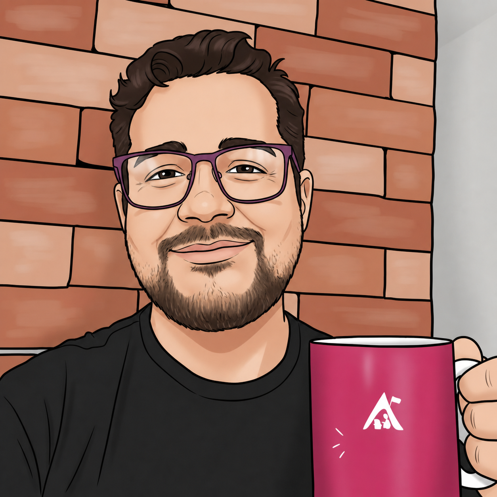
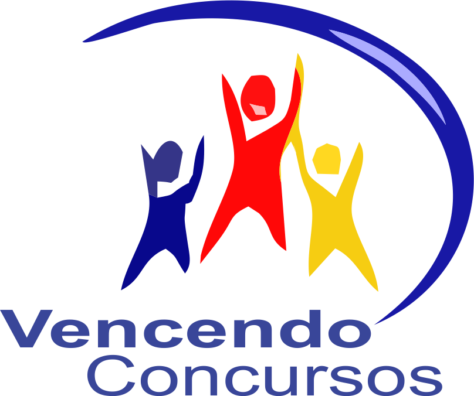
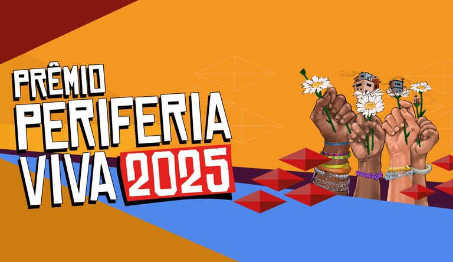
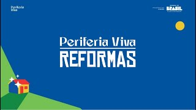
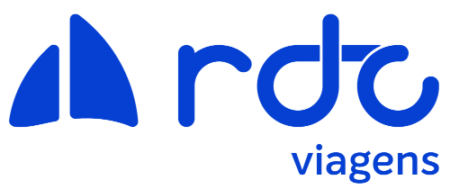
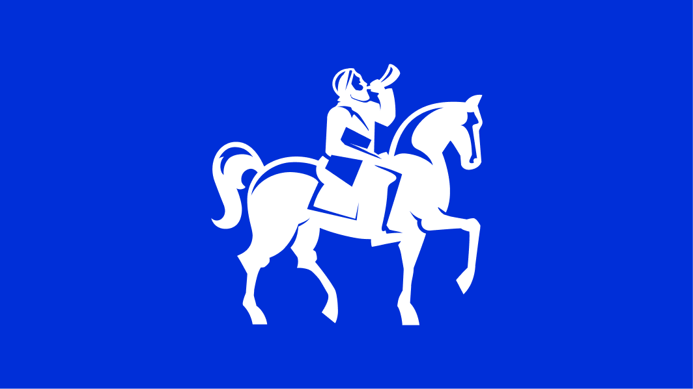
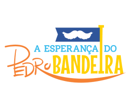
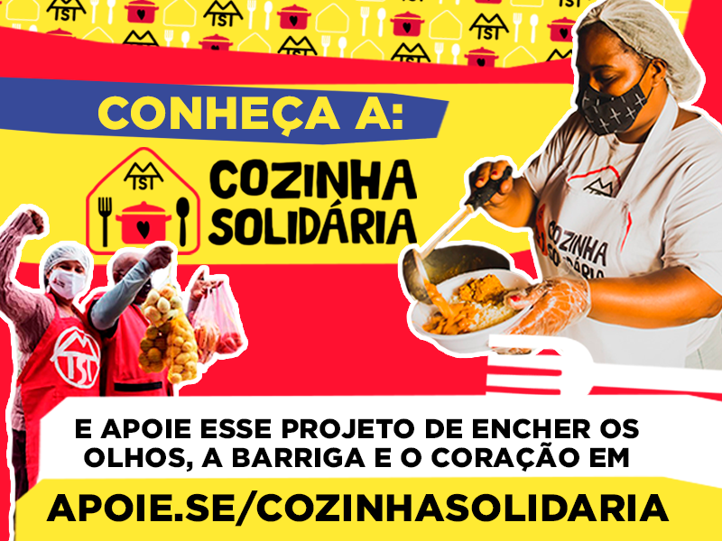

WordPress
Temas, plugins, hooks, actions, filters, CPT, taxonomias, ACF, template hierarchy e multisite.
WordPress, PHP, Laravel, IA aplicada e arquitetura de conteúdo
Eu sou Daniel Silva, desenvolvedor web com quase 14 anos criando temas, plugins, integrações API REST, WooCommerce, portais institucionais e plataformas digitais com foco em performance, SEO técnico e experiência do usuário. Hoje também sou pós-graduando em Engenharia de Software em IA Aplicada.

Perfil
Desenvolvedor, professor e pai de adolescente. Acredito em uma tecnologia feita para servir as pessoas, aberta a quem quiser aprender, criar e transformar a própria realidade com ela.
Atuo no desenvolvimento de temas do zero, Gutenberg, Theme Builder, Custom Post Types, taxonomias, campos personalizados, hooks, otimização de performance, SEO técnico, segurança e responsividade.
Minha experiência passa por portais de alta audiência, ambientes educacionais, e-commerces, intranets corporativas e plataformas públicas com alto volume de acesso.
Em paralelo, estou cursando pós-graduação em Engenharia de Software em IA Aplicada para conectar minha base web com automação, qualidade de software e novas formas de construir produtos digitais.
Stacks
Temas, plugins, hooks, actions, filters, CPT, taxonomias, ACF, template hierarchy e multisite.
PHP, SQL, MySQL, MariaDB, SQL Server, autenticação, segurança e integrações com APIs REST.
HTML5, CSS3, Sass, Bootstrap, Flexbox, Grid, JavaScript, jQuery, AJAX, React, UX/UI e responsividade.
WooCommerce, Moodle, Joomla, Drupal, Magento, Laravel, Mapas Culturais, Vue.js, AWS e Azure.
Cases

Landing pages em WordPress integradas ao RD Station, CPTs para notícias, cursos e conteúdos, otimização de UX, SEO, segurança com Wordfence e configuração de Moodle.
Acessar projeto
Plataforma construída em Laravel com base no Mapas Culturais, com customizações de fluxo, plugin para distribuição automatizada de avaliadores e melhorias de usabilidade, performance e estabilidade.
Acessar projeto
Plataforma em Laravel baseada no Mapas Culturais para submissão e acompanhamento de propostas do programa, com fluxos administrativos, conteúdo público e suporte a regras de seleção.
Acessar projetoSite institucional bilíngue em WordPress com tema criado do zero, estrutura flexbox, Custom Post Types e ACF para organizar conteúdos, soluções e páginas institucionais.
Acessar projeto
Tema WordPress do zero com PHP, HTML, CSS e JavaScript, integração REST para autenticação segura, dashboard com consumo de serviços externos e melhorias de performance.
Acessar projeto
Manutenção e evolução de 25 sites governamentais, hotsites de alta visibilidade e Vacinômetro com integração a API externa da Secretaria da Saúde.
Acessar projeto
Desenvolvimento de temas WordPress e manutenção para blogs de grande audiência, com suporte a conteúdo, estabilidade operacional e evolução de templates editoriais.
Acessar projeto
Site WordPress com Custom Post Types e filtros para obras literárias, pensado para consulta de livros, conteúdos do autor e navegação clara por acervo.
Acessar projeto
Site estático em HTML, CSS e JavaScript puro, desenvolvido como trabalho voluntário para divulgar cozinhas solidárias, contribuições, imprensa e conteúdo institucional.
Acessar projetoOutros projetos, manutenções e evoluções também fazem parte da caminhada.
E muito maisTrajetória
Laravel, Mapas Culturais, plugins customizados e manutenção evolutiva para fluxos públicos e avaliação.
WordPress, RD Station, Moodle, tema bilíngue do zero, ACF, CPTs e melhorias de UX em conversão.
Temas customizados, intranet com SSO Microsoft, APIs REST, CPTs, ACF e portais institucionais.
Portais de grande audiência, blogs WordPress, multisite, hotsites, SEO técnico e suporte a ambientes críticos.
Formação
Engenharia de Software em IA Aplicada, UniPDS.
Análise e Desenvolvimento de Sistemas, Fatec e ETEP Centro Universitário.
Formação técnica em Informática pela ETEC Lauro Gomes.
PHP, Java, Itil, Desenvolvimento Web, QlikView e Flask Python
Contato
Estou em São Paulo/SP e atuo com desenvolvimento Web PHP, WordPress, WooCommerce, Moodle, manutenção evolutiva, integrações e melhoria de performance.